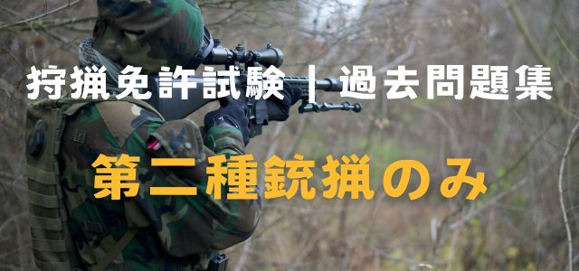

狩猟免許試験は、法令関連の問題が 全30問中13問出題されます。言葉が難しかったり紛らわしいものもありますが、法令関連の出来が合否をわけますのでしっかり準備しましょう。今回は 第二種銃猟だけに出題される問題を練習します。第一種銃猟より少しだけ範囲がせまいです。 第一種猟銃試験を受ける方は こちらへ。
全猟種共通の問題は こちらで見ることができます。
2019年の例題集から抜粋していますので、法律が改訂されたりして答えが違う場合はご指摘いただけると幸いです。
練習問題
- 問）空気散弾銃は、半矢の狩猟鳥獣をいたずらに増やすおそれがあるので使用が禁止されている。〇か×か？
- 答）〇
- 問）運航中の自動車からの発砲は原則として禁止されているが、例外として低速運行時で周囲に人がいない場合については発砲が認められている。〇か×か？
- 答）×（低速であっても、運行中の自動車からの発砲は禁止）
- 問）据銃は、人に危害を加えるおそれがあるので原則として使用が禁止されているが、例外としてセンサー（感知器）つきのものは使用が認められている。
- 答）×（据銃の使用は例外なく禁止）
- 問）散弾銃の標準的な口径は12番または20番であるが、口径12番より番数の大きい（口径の短い）銃器については使用が禁止されている。〇か×か？
- 答）×（番数の小さい（口径の長い）銃器は使用禁止）
- 問）5ノット以上の速度で運航しているしているモーターボートからの発砲は原則として禁止されているが、停泊しているまたは5ノット未満の低速運行をしているモーターボートから発砲は認められている。〇か×か？
- 答）〇
- 問）特定猟具使用禁止区域（銃猟の使用禁止）であっても、音の静かな空気銃による狩猟に限り、例外的に銃器による狩猟が認められている。〇か×か？
- 答）×（特定猟具使用禁止区域（銃猟の使用禁止）では、例外なく銃の使用禁止）
- 問）住居が集合している地域であっても、流れ弾が人家に行かないように気を付ければ、銃器による狩猟が出来る。〇か×か？
- 答）×（住居が集合している地域では銃の使用禁止）
- 問）墓地では、その神聖さや尊厳を保持するために、狩猟は禁止されている。〇か×か？
- 答）〇
- 問）国道、都道府県道、市町村道においては狩猟が禁止されているが、農道及び林道においては狩猟が認められている。〇か×か？
- 答）×（農道や林道も公道なので狩猟禁止）
- 問）公道の上における狩猟は禁止されているが、公道の上から畑にいる鳥獣を狩猟することは認められている。〇か×か？
- 答）×（公道からの発砲も公道の狩猟になる）
- 問）弾丸が公道の上を通過する方法による狩猟は禁止されている。〇か×か？
- 答）〇
- 問）日没後から日の出までは銃猟が禁止されている。しかし、満月の時には、日没後であっても銃猟をすることができる。〇か×か？
- 答）×
- 問）日没後から日の出までは銃猟が禁止されている。この場合の日没、日の出の時刻は、都道府県ごとに同一時刻としている。〇か×か？
- 答）×（日没、日の出の時刻は暦による時刻で地域により異なる）
- 問）日没後から日の出までは銃猟が禁止されている。この場合の日没、日の出の時刻は、地域によって異なっている。〇か×か？
- 答）〇
- 問）日の出または日没の時刻は、暦にいう「日の出」または「日の入り」ではなく、実際の日光の明暗により決められている。〇か×か？
- 答）×（「日の出」「日の入り」は暦による時刻）
- 問）日の出または日没の時刻は、実際の日光の明暗ではなく、暦にいう「日の出」または「日の入り」の時刻であると決められている。〇か×か？
- 答）〇
- 問）日の出または日没の時刻は、実際の日光の明暗ではなく、「日の出」は午前6時15分、「日の入り」は午後4時45分である。〇か×か？
- 答）×（「日の出」「日の入り」は暦による時刻で地域により異なる）
- 問）弾丸の到達するおそれがある建物に向かって銃猟を行うことは禁止されているが、空気銃の場合は弾丸コンクリート造りの倉庫などの堅固な建物に限り例外として許される。〇か×か？
- 答）×
- 問）弾丸の到達するおそれがある建物、電車、自動車または船舶に向かって銃猟を行うことは、装薬銃の場合は禁止されているが、空気銃の場合は禁止されていない。〇か×か？
- 答）×
- 問）弾丸の到達するおそれがある建物、電車、自動車または船舶に向かって銃猟を行うことは、どのような場合であっても例外なく禁止されている。〇か×か？
- 答）〇
- 問）特定猟具使用禁止区域は、特定猟具の使用による危険を未然に防止するためばたは静穏を保つために、都道府県知事により指定される。〇か×か？
- 答）〇
- 問）特定猟具使用禁止区域は、特定の鳥獣の保護繁殖等を図るために、都道府県知事により指定される。〇か×か？
- 答）×（危険防止と静穏のため）
- 問）特定猟具使用禁止区域は、特定猟具を使用する狩猟者が集中することによる危険を防止するために、環境大臣により指定される。〇か×か？
- 答）×（都道府県知事）
- 問）特定猟具使用禁止区域（銃器の使用禁止）では銃器を使用した狩猟は、すべて禁止されている。〇か×か？
- 答）〇
- 問）特定猟具使用禁止区域（銃器の使用禁止）では、銃器を使用した狩猟は、市町村長の許可を受ければ行うことが出来る。〇か×か？
- 答）×（許可を受ければできる区域ではない）
- 問）特定猟具使用禁止区域（銃器の使用禁止）では、銃器を使用した狩猟は、都道府県知事の許可を受ければ行うことが出来る。〇か×か？
- 答）×（許可を受ければできる区域ではない）
- 問）銃器を持って猟場に足を踏み入れたときから「捕獲行為」をしたことになる。〇か×か？
- 答）×（明確な捕獲の意思を持って獲物に向かって発砲した場合）
- 問）銃器を持ち歩くだけで「捕獲行為」をしたことになる。〇か×か？
- 答）×（明確な捕獲の意思を持って獲物に向かって発砲した場合）
- 問）獲物を手に入れるために発砲した場合は、半矢で逃がしてしまったときでも、「捕獲行為」をしたことになる。〇か×か？
- 答）〇
- 問）特定猟具使用制限区域（銃器の使用制限）は、銃猟を行うハンターが集中することによる危険を防止するために都道府県知事により指定される。〇か×か？
- 答）〇
- 問）特定猟具使用制限区域（銃器の使用制限）は、特定の狩猟鳥獣の増加を図るために、環境大臣により指定される。〇か×か？
- 答）×（都道府県知事）
- 問）特定猟具使用制限区域（銃器の使用制限）は、銃猟による危険を未然に防止するため又は静穏を保つために環境大臣により指定される。〇か×か？
- 答）×（都道府県知事）
- 問）特定猟具使用制限区域（銃器の使用制限）で銃猟をしようとする者は、都道府県知事の承認を得なければならない。〇か×か？
- 答）〇
- 問）特定猟具使用制限区域（銃器の使用制限）で銃猟をしようとする者は、市町村長の承認を得なければならない。〇か×か？
- 答）×（都道府県知事）
- 問）特定猟具使用制限区域（銃器の使用制限）で銃猟をしようとする者は、環境大臣の定めた銃器の使用基準に従う場合は、特段の手続きなしに狩猟を行うことができる。〇か×か？
- 答）×（都道府県知事の承認が必要）